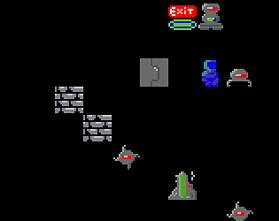

Robots!

Written in Java using the libGDX framework, Robots! is my first commercially released game project.
It began as an attempt to rewrite this game in order to learn. Eventually, after much tinkering, it became an attempt to “fix” what I saw as the inherently flawed design of the versions that came before.
I think I succeeded fairly well in maintaining what made the earlier versions interesting while removing the major flaw: the rapid devolution into random chance or inevitable defeat.
I did no kind of marketing for this game, nor did I see a clear path to marketing a mobile game with an intentionally bare bones 80’s arcade aesthetic and no modern bells and whistles. While I am pleased with it, especially as a first project, I really finished and released it so I could have something finished and released.
You can check out the demo here, or buy the full version for a dollar there.